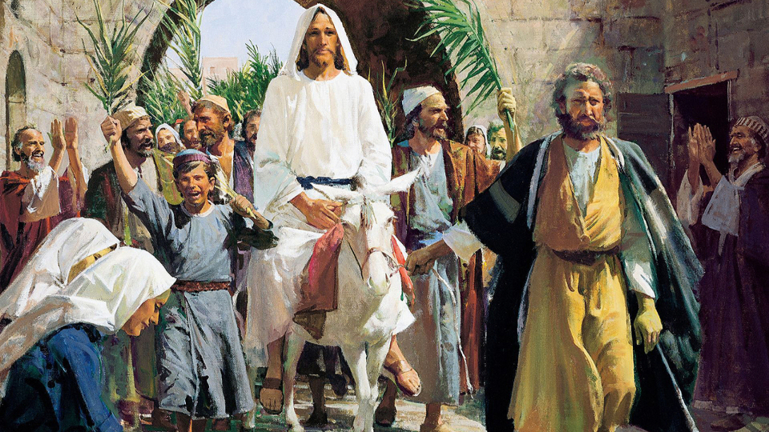
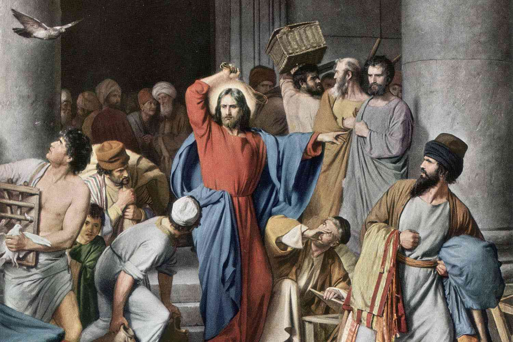
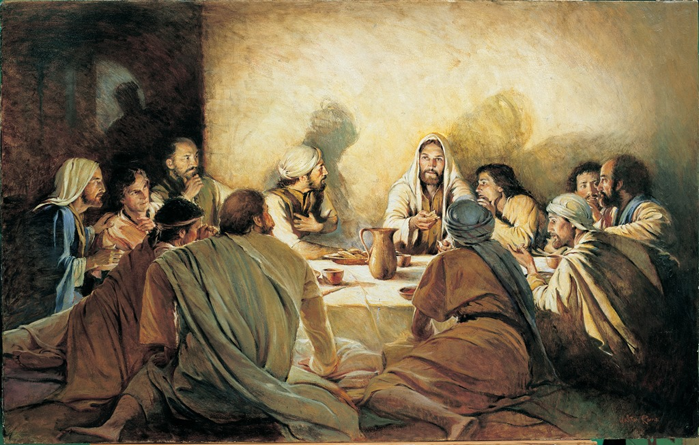
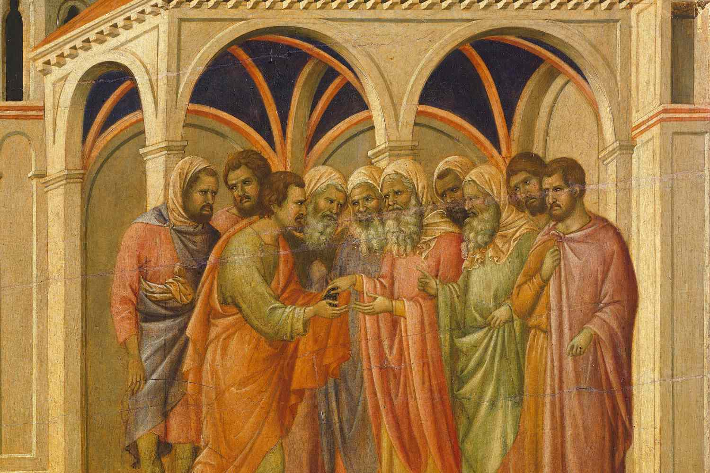
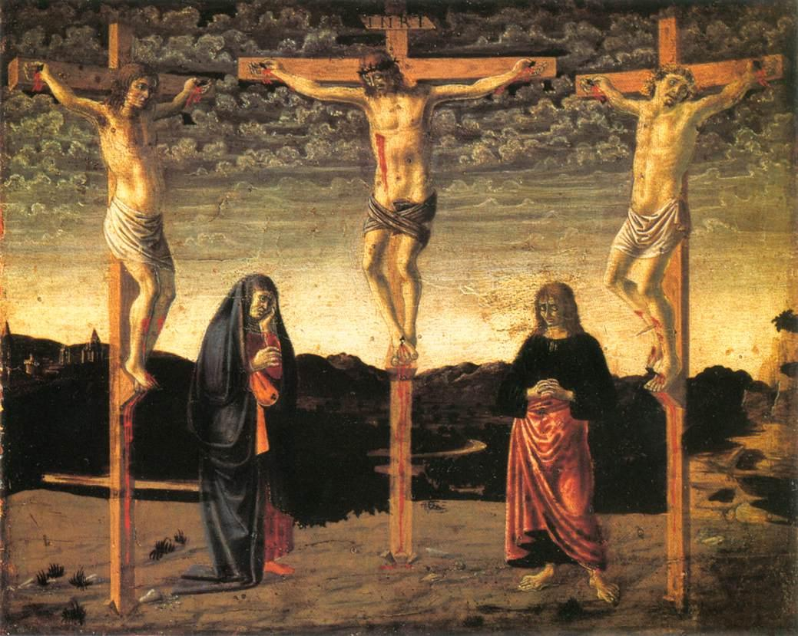
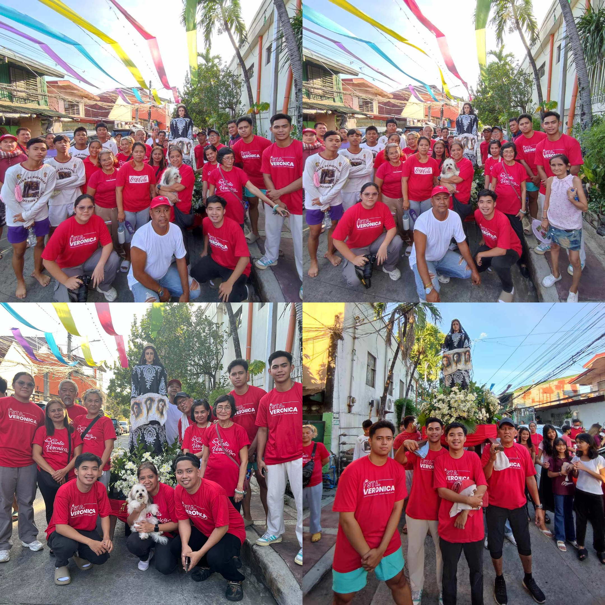
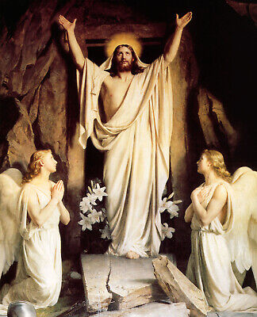

LENTEN SEASON
Palm Sunday commemorates the Christian belief in the triumphal entry of Jesus into Jerusalem,
when he was greeted by cheering crowds waving palm branches that they set out on the ground
along his path.

MY ACTIVITY
Me together with my Girlfriend, my elder brother and his Girlfriend attend Sunday mass at Resurrection of our Lord Parish
The second day of Holy Week, right after Palm Sunday. It is the second day that Jesus was in Jerusalem,
and the Bible records him giving a variety of teachings and debating the religious leaders over Holy Monday
and the next day.

MY ACTIVITY
Our team LOCAL Media Ltd. invited to an event called "Hue Wave" this event is all about open mic with underground rappers
and Music Video Launch of Whygee? of Northgvng and A$tr0 of OWFCK

Holy Tuesday is also known as Fig Tuesday "as it commemorates the day Jesus returned to Jerusalem from Bethany,
passing a barren fig tree on the way, which he used as an example to teach his disciples." The passages discussing this are found in the
Gospels of Matthew and Mark.

MY ACTIVITY
Me and classmates attends our last day of class before the start of the Holy Week break
In Christianity, Holy Wednesday commemorates the Bargain of Judas as a clandestine spy among the disciples.
It is also called Spy Wednesday, or Good Wednesday (in Western Christianity), and Great and Holy Wednesday
(in Eastern Christianity).

MY ACTIVITY
Every Holy Wednesday our family prepare our statue of the saint called "Saint Veronica" We procession our statue
together with other statue of the saints.
Maundy Thursday is the Thursday before Easter, believed to be the day when Jesus celebrated his final Passover with His disciples.
Most notably, that Passover meal was when Jesus washed the feet of His disciples in an extraordinary display of humility.
MY ACTIVITY
Me and My Girlfriend visited 7 churches and we do the station of the cross
Good Friday is a Christian holy day observing the crucifixion of Jesus and his death at Calvary.
It is observed during Holy Week as part of the Paschal Triduum. It is also known as Holy Friday,
Great Friday, Great and Holy Friday (also Holy and Great Friday).

MY ACTIVITY
Every Good Friday our family prepare our statue of the saint called "Saint Veronica" We procession our statue
together with other statue of the saints.

Black Saturday a day when Jesus Christ “rested" from his work of bestowing redemption to mankind.
This day marks the end of the Holy week, and is considered to be a period of silent.
MY ACTIVITY
Me together with my Girlfriend, my elder brother and his Girlfriend attend Sunday mass at Resurrection of our Lord Parish
Easter Sunday marks Jesus's resurrection. After Jesus was crucified on the Friday his body was taken down from the cross and buried in a cave tomb.
The tomb was guarded by Roman soldiers and an enormous stone was put over the entrance. On Sunday Mary Magdalene and some of Jesus's disciples visited the tomb.

MY ACTIVITY
Me together with my Girlfriend, my elder brother and his Girlfriend attend Sunday mass at Resurrection of our Lord Parish